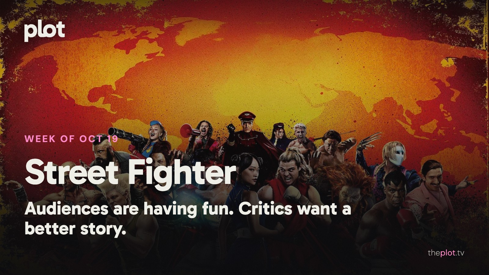

|
the week of October 19
|
|
The weekend brought a fight over Street Fighter and a survival movie set inside a whale. At home, there's a new school comedy, a Mike Tyson documentary, and another season of The Diplomat to lose an evening to. Ahead: Clayface, Wildwood, and a woman who orders herself a wicker husband. Plus this week's trending top ten and three picks to save now, before your Friday night becomes a feature-length argument about what to put on.
 Image: Street Fighter (2026), promotional backdrop. Source: TMDB. Text overlay by Plot.
In theaters
Street Fighter brought in $4 million from Thursday previews on October 15. The early reviews find more to enjoy in the familiar fighters than the script. Ticket buyers have been warmer, which is where things get interesting below.
Whalefall puts a diver inside a whale and leaves reviewers arguing about how long they want to stay there. The Guardian finds it overextended; Esquire counts it among the year's scariest films. Your tolerance for tight spaces may decide this one.
Other Mommy, the Jessica Chastain horror, drew a crowd without winning people over. AP's opening-weekend report describes poor reviews from critics and audiences, including a D+ CinemaScore from opening-night moviegoers.
What everyone's talking about
Street Fighter is getting more love from ticket buyers than from reviewers. Destructoid recorded a 45 percent critic score and an 82 percent audience score on October 16. The appeal is easy to locate: familiar fighters, signature moves, and the noisy pleasure of an arcade brought to life. Recognizing a favorite fighter is one pleasure; getting a story worth following is another. Even the opening-night Reddit discussion gets caught on the editing and time jumps. Fans are having fun; the script is still taking a beating.
The Diplomat is the happier conversation at home. The early season-four reviews collected by Rotten Tomatoes are strongly positive, and the Guardian finds its escalating stress enormously entertaining. The appeal is watching very capable people make a mess of both diplomacy and their marriages. If you fell behind, this is a reason to catch up. If you've already finished, please give the group chat a minute before discussing the ending.
Production note. This line is not in the sent letter.
GIF: Savannah to choose a reaction GIF for the critic and audience split. Add a caption and source when selected. Now on TV and Streaming
 Image: Hollywood Arts (2026), promotional backdrop. Source: TMDB.
Hollywood Arts is for the part of you that still remembers the Victorious theme song. The new Netflix comedy arrived October 15, with Daniella Monet back as Trina Vega, still chasing her own acting break while teaching a new class of performing-arts kids. School chaos, big ambitions, and the alarming realization that Trina is now the responsible adult.
 Image: TYSON (2026), promotional backdrop. Source: TMDB.
TYSON goes beyond the highlight reel. Netflix's four-part documentary follows the champion's rise alongside the violence, prison, money trouble, and addiction that complicated his life. Tyson and people close to him take part in the interviews. Put this on when you want the longer, uncomfortable story behind a figure you've mostly encountered in headlines.
 Image: The Diplomat (2023), promotional backdrop. Source: TMDB.
The Diplomat is back for anyone who likes their political crises tangled up with marital ones. Keri Russell's Kate Wyler is trying to hold international relations together while two marriages threaten to pull everything apart. All eight episodes of season four are on Netflix. Your pick if you want another episode before you've finished discussing the last one.
Coming up
|
|
You're receiving this because you subscribed at theplot.tv.
Unsubscribe
SUSUMU HOUSE · Level 1, 63-73 Ann Street, Surry Hills, NSW 2010 |
 Play the official trailer
Play the official trailer Play the official trailer
Play the official trailer Play the official trailer
Play the official trailer